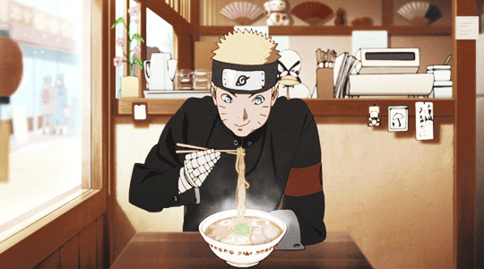

Naruto's Ramen Recipe

Make your belly warm and happy with this quick 'Naruto' Ramen Recipe
Replicate our beloved anime protagonist's favourite Ichiraku Ramen!
Activate the Shinobi blood in you with this dish!
Ingredients
Noodles and Other Mains
- 6 portions ramen noodles, fresh or instant
- Soy-marinated eggs
- Marinated bamboo shoots
- Chopped green onion
For the Soy Sauce Broth
- 3 litres Water
- 900g Chicken Bones
- 450g Boneless Pork Shoulder or Loin
- 3 Garlic Cloves, peeled
- 1 Ginger Piece, sliced
- 3 Green Onions,roughly chopped
- 250ml Soy Sauce
- 60ml Sake
- 2 tbsp Mirin
For the Chashu Sauce
- 160ml Water
- 80ml Sake
- 80ml Soy Sauce
- 3 tbsp Sugar
The Steps to Creating This Hearty Noodle Soup!
- Rinse the chicken bones in cold water, then place them in a large pot with the water, pork, garlic, ginger, and green onions.
- Bring to the boil, removing the dirt that comes to the surface. Lower the heat and simmer with the pot covered for around two hours.
- Remove the pork, then strain off the broth, getting rid of the other ingredients.
- Add the soy sauce, sake, and mirin, then leave to simmer with the pot covered until ready to serve.
- Mix the ingredients for the chashu sauce in a large pan. Add the pork, then bring to the boil over a medium heat. Cover with a lid, leaving slightly open so the steam can escape, then reduce the heat to low and simmer for around 30 minutes, turning the meat from time to time until just a little bit of liquid is left.
- Remove the lid, stay with the pan, and watch the liquid simmer until bubbles start to appear.
- Turn the pork to cover it completely with the sauce, then remove from the pan and slice thinly.
- When ready to serve, cook the ramen following the instructions on the packaging. Divide the broth into six bowls, then add the noodles, pork, bamboo shoots, soy-marinated eggs, and green onions.
- Serve hot!
A lengthy but hearty recipe to follow! Naruto surely agrees!
